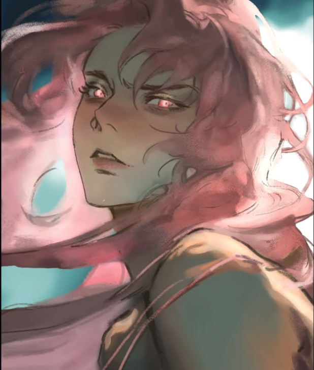

UI/UX Designer
Layouts, flows, and interactions that make websites and apps feel natural. Start with Figma.
DesignX / Disciplines
You do not need to arrive knowing every tool. Pick a direction, start with a project, and learn the parts that help you make it real.

Layouts, flows, and interactions that make websites and apps feel natural. Start with Figma.
Posters, layouts, and print pieces that carry a message at a glance.
Dimensional scenes and objects for when flat design is not enough. Blender is a good place to begin.
Original artwork and visual style for campaigns, covers, and experiments.
Animated posters, transitions, and motion for reels and events.
Content, coordination, and communication that gets the work in front of people.